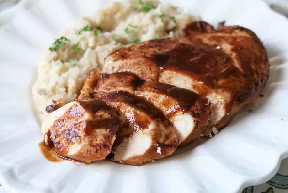

Baked Chicken In a Sweet BBQ Sauce

Description
What I had to do to squeeze this recipe from my neighbor...but it's worth it. This is a scrumptious version of sticky chicken.
- Prep: 10 mins
- Cook: 50 mins
- Serving: 4
Ingredients
- 1.5 pounds ground beef
- 1 (30 ounce) jar marinara sauce
- 0.75 cup water
- 1 teaspoon salt
- 12 lasagna noodles
- 1 (16 ounce) package cottage cheese
- 12 ounces grated mozzarella cheese
- 0.5 cup grated Parmesian cheese
Directions
- Preheat oven to 400 degrees F (200 degrees C)
- Whisk together barbecue sauce, soy sauce, red wine, maple syrup, chili powder, dry mustard powder, garlic powder, onion powder, and cumin in a bowl until thoroughly combined.
- Place the chicken breasts into a 9x13-inch baking dish, and pour the sauce over the chicken. Turn the chicken pieces over in the sauce to coat both sides.
- Bake in the preheated oven until the chicken is no longer pink and the juices run clear, about 40 minutes. An instant-read thermometer inserted into the thickest part of a breast should read 160 degrees F (70 degrees C). Remove the chicken from the baking dish, and keep warm.
- Pour the remaining sauce into a saucepan, place over medium heat, and bring to a boil. Whisk the cornstarch and water together in a small bowl until smooth. Whisk the cornstarch mixture into the sauce; reduce heat to a simmer, and allow the sauce to thicken, whisking constantly. Return the chicken to the dish, and pour the thickened sauce over the chicken to serve.